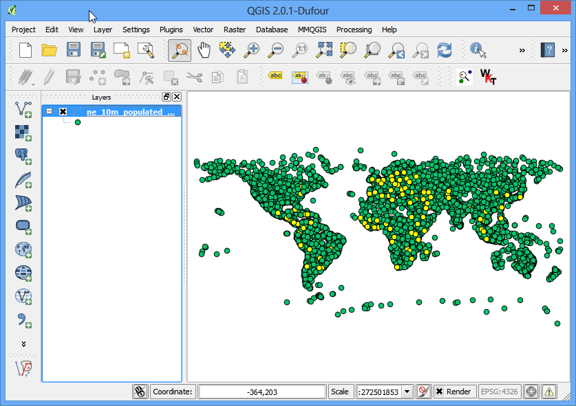
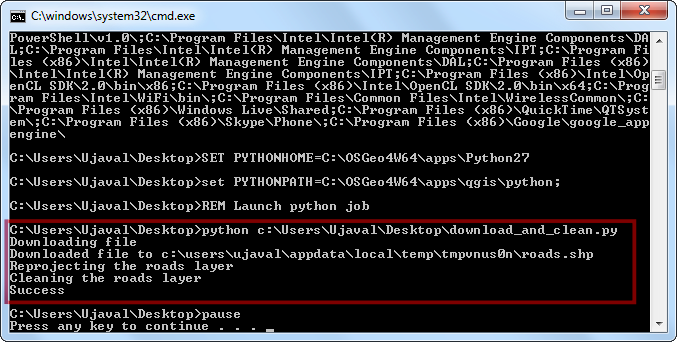

Raster, elementi base: tematizzazione ed analisi
[ Download PDF A4 Letter ]
Frequentemente ricerche e rilevamenti di carattere scientifico esitano nella produzione di set di dati di tipo raster. I dati raster sono essenzialmente griglie di punti a cui vengono assegnati specifici valori. Effettuando operazioni matematiche su tali valori si possono realizzare analisi interessanti. QGIS dispone di una serie di strumenti di analisi residenti, contenuti nel Calcolatore Raster. In questa esercitazione esploreremo gli usi comuni del Calcolatore Raster e le opzioni disponibili qualora si vogliano tematizzare dei dati di tipo raster.
Descrizione del compito
Useremo una griglia di dati che descrive la densità della popolazione mondiale per individuare e visualizzare quelle aree del pianeta che, nel periodo compreso tra il 1990 e il 2000, sono state teatro di cambiamenti drammatici nella densità della popolazione.
Altri aspetti che avremo modo di apprendere nel corso dell’esercizio
Ottenere i dati necessari
Useremo il dataset Gridded Population of the World (GPW) v3 della Columbia University. Specificamente, ci occorre una Griglia della Densità Globale dell’intero pianeta in formato ASCII dall’anno 1990 al 2000.
Spieghiamo di seguito come cercare e scaricare questi dati rilevanti.
Andate alla pagina di download della griglia di densità della popolazione: Population Density Grid, v3 download page. Selezionate Data Attributes come .ascii format, 1° resolution e, infine, 1990 year.. A questo punto potete creare un account gratuito e fare login, oppure utilizzare il pulsante Guest Download in basso per scaricare subito i dati. Ripetete lo stesso percorso per i dati relativi all’anno 2000.

A questo punto dovreste aver scaricato 2 file archivio in formato .zip.
For convenience, you may directly download a copy of the datasets from the
links below:
gl_gpwv3_pdens_90_ascii_one.zip
gl_gpwv3_pdens_00_ascii_one.zip
Fonte Dati [GPW3]
Procedimento
Aprite QGIS e andate su .

Trovate i file .zip scaricati. Tenete premuto il tasto Ctrl e fate click su entrambi i file zip per selezionarli. Questo vi metterà in condizione di estrarli entrambi in un solo passo e vederli immediatamente all’interno di QGIS.

Ciascun file contiene 2 griglie di dati. La a nel nome del file indica che il conteggio della popolazione è stato aggiustato per corrispondere ai totali delle Nazioni Unite. In questa esercitazione useremo le griglie con l’aggiustamento. Selezionate quindi glds00ag60.asc come layer da aggiungere. Fate click su OK.

Il layer non possiede un CRS definito. Visto che le griglie sono in lat/long, scegliete EPSG:4326 come sistema di riferimento.

Dal momento che abbiamo selezionato entrambi i file zip, vedrete finestre di dialogo di questo tipo una volta ancora. Ripetete il processo e selezionate glds90ag60.asc come layer da aggiungere.

E una volta ancora scegliete EPSG:4326 come sistema di riferimento.

Ora dovreste vedere entrambi i raster caricati in QGIS. Sono presentati in scala di grigio. Dove i pixel sono più scuri essi indicano valori più bassi, mentre dove i pixel sono più chiari indicano valori di densità più alti.

Ciascun pixel nel raster ha un valore di densità assegnato. Questo valore è la densità di popolazione per quella zona. Fate click su Informazioni elementi per attivare lo strumento che serve ad interrogare la griglia. Con esso fate click in qualsiasi punto del raster per vedere il valore assegnato a questo o a quel pixel.

Per visualizzare meglio la distribuzione della densità della popolazione, può essere utile tematizzarla. Fate click sul tasto destro sul nome del layer e selezionate Proprietà. Potete anche fare doppio click sul nome del layer nella TOC per avere subito la finestra di dialogo Proprietà del Layer.

Nella scheda Stile cambiate il tipo di visualizzazione e portatelo su falso colore banda singola. Quindi fate click sul pulsante Classifica nella scheda in alto a destra Genera nuova mappa di colore. Abbiamo creato in tal modo 5 nuovi valori corrispondenti ad altrettanti colori. Fate click su OK.

Torniamo nella finestra principale di QGIS e vedremo sul raster una visualizzazione che ricorda una mappa di concentrazione. Ripete la stessa procedura nello stesso modo per l’altro raster.

Per le nostre analisi, come abbiamo già detto, è nostra intenzione scoprire le aree con i più vistosi cambiamenti nella distribuzione della popolazione avvenuti tra il 1990 e il 2000. Il metodo per ottenere questo risultato consiste nel misurare le differenze tra i valori di ciascuna griglia nei due layers. Selezionate .

- In the Raster bands section, you can select the layer by
double-clicking on them. The bands are named after the raster name followed
by @ and band number. Since each of our rasters have only 1 band, you will
see only 1 entry per raster. The raster calculator can apply mathematical
operations on the raster pixels. In this case we want to enter a simple
formula to subtract the 1990 population density from 2000. Enter
glds00ag60@1 - glds90ag60@1 as the formula. Name your output layer as
pop_density_change_2000_1990.tif and check the box next to
Add result to project. Click OK.

Una volta che l’operazione è stata completata vedrete il nuovo layer caricato in QGIS.

La visualizzazione a scala di grigi è funzionale ma noi intendiamo creare un output molto più informativo. Tasto destro sul layer pop_density_change_2000_1990 e selezioniamo Proprietà.

Intendiamo tematizzare il layer in modo che i valori dei pixel che cadono all’interno di determinati intervalli restituiscano lo stesso colore. Prima di calarci in questa operazione andiamo nella scheda Metadati e diamo un’occhiata alle proprietà del raster. Prendete nota dei minimi e dei massimi valori di questo layer.

Adesso andate nella scheda Stile. Selezionate falso colore banda singola come tipo di visualizzazione nella scheda Visualizzazione Banda. Settate la voce Interpolazione Colore su Discreto. Fate click 4 volte sul pulsante Aggiungi valori manualmente per creare quattro classi uniche. Fate click su ciascuna classe per cambiarne i valori. La lista dei colori delle classi funziona in modo tale che tutti i valori inferiori a quello inserito restituiranno il colore di quella classe. Dal momento che il valore minimo del nostro raster è intorno a -2000, noi sceglieremo -2000 per la prima classe. Questo sarà il colore in assenza di dati. Inserite i valori e le etichette per le altri classi sotto e fate click su OK.

Adesso disponete di una visualizzazione molto più eloquente, in cui potrete individuare le aree che hanno visto cambiamenti positivi o negativi della densità. Fate click sullo strumento Zoom alla selezione e disegnate un rettangolo intorno all’Europa per esplorare la regione in maggior dettaglio.

Utilizzate lo strumento Informazioni Elementi e fate click sulle regioni Rosse e su quelle Blue per verificare che i nostri comandi abbiano svolto il lavoro nel modo da noi voluto.

Ora portiamo questa analisi ancora un passo avanti e troviamo le aree che hanno visto soltanto dei cambiamenti negativi. Aprite .

- Enter the expression as shown below What this expression will do is set the
value of the pixel to 1 is if matches the expression and 0 if it doesn’t.
So we will get a raster with pixel value of 1 where there was negative
change and 0 where there wasn’t. Name the output layer as
negative_pop_change_2000_1990 and check the box next to Add
result to project. Click OK.
pop_density_change_2000_1990@1 < -10

Una volta che il nuovo layer è stato caricato, fate click sul tasto destro e selezioniate sul layer la voce Proprietà. Nella scheda Trasparenza inserire il valore 0 nella casella valori nulli aggiuntivi. Questa impostazione renderà i pixel con valore 0 trasparenti. Fate click su OK.

Ora potrete vedere le aree con cambiamento negativo della densità della popolazione contrassegnate da un pixel grigio.